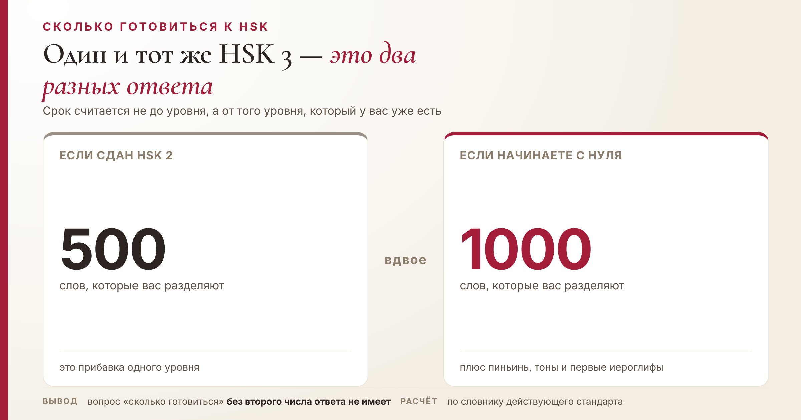
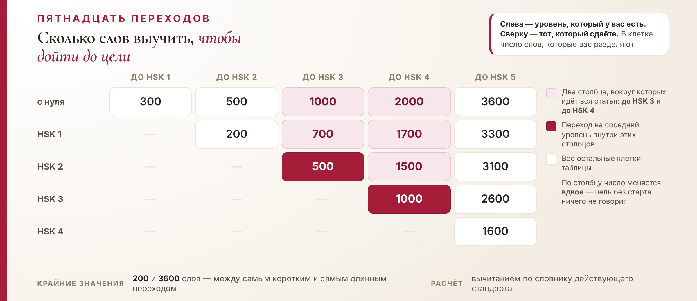

Экзамен
Сколько готовиться к HSK: срок считается от вашего уровня, а не до цели


«Сколько готовиться к HSK 3» — вопрос, у которого нет ответа, пока не названо второе число. Для того, кто сдал второй уровень, это 500 слов. Для того, кто начинает с нуля, — 1000. Ровно вдвое.
Разберу, как считать свой срок: сколько слов отделяет вас от цели и какая дневная норма из этого выходит. Про сам экзамен и то, что он подтверждает, у нас есть отдельный разбор — сертификат HSK и зачем он нужен.
Короткий ответ: считайте разницу, а не уровень
Срок подготовки — это не свойство уровня. Это расстояние между той точкой, где вы сейчас, и той, куда идёте.
Поэтому в статье нет таблицы «сколько месяцев нужно на каждый уровень». Такая таблица у нас есть, и она про другое — про дорогу с нуля: за сколько можно выучить китайский с нуля. Здесь считается ваша личная разница.
Делается это в два действия. Первое: вычесть словник вашего уровня из словника цели — получится число слов. Второе: разделить его на число дней до экзамена — получится дневная норма.
Дневная норма и есть честный ответ. Она сразу показывает, подъёмен план или нет, и делает разные планы сравнимыми между собой — чего срок в месяцах не делает.
Оговорюсь сразу, до всех чисел: деление — это арифметика, а не обещание. Слова учатся неравномерно, первые сотни идут быстрее последних, а пропущенная неделя поднимает норму на остаток срока.
И главное условие, без которого расчёт не работает. «Мой уровень» должен означать сданный уровень или хотя бы измеренный, а не пройденный по учебнику. Это разные вещи, и разница почти всегда не в вашу пользу.
Проверяется это одним прогоном: полный тест того уровня, который вы считаете своим, по времени и без подсказок. Полчаса работы в начале экономят месяцы в конце.
Сколько слов выучить: от любого старта до любой цели
Словник действующего стандарта накопительный: 300 слов к концу первого уровня, 500 ко второму, 1000 к третьему, 2000 к четвёртому и 3600 к пятому. Разница между двумя клетками и есть ваша работа.
| Старт | до HSK 1 | до HSK 2 | до HSK 3 | до HSK 4 | до HSK 5 |
|---|---|---|---|---|---|
| с нуля | 300 | 500 | 1000 | 2000 | 3600 |
| HSK 1 | — | 200 | 700 | 1700 | 3300 |
| HSK 2 | — | — | 500 | 1500 | 3100 |
| HSK 3 | — | — | — | 1000 | 2600 |
| HSK 4 | — | — | — | — | 1600 |
Читать её нужно по столбцам, а не по строкам. Возьмите столбец «до HSK 3»: 1000 слов с нуля, 700 с первого уровня, 500 со второго. Одна и та же цель, а работа различается ровно вдвое.
Это и есть причина, по которой чужие сроки вам ничего не говорят. «Подруга подготовилась за три месяца» — верное утверждение про её строку таблицы, а вы находитесь в другой.
Посмотрите заодно на диагональ — переходы между соседними уровнями. Со второго на третий это 500 слов, с третьего на четвёртый уже 1000, а с четвёртого на пятый 1600. Начиная со второго уровня каждая следующая ступень заметно длиннее предыдущей.
Самый лёгкий переход во всей таблице — с первого уровня на второй: 200 слов. Из-за него и возникает ощущение, что дальше пойдёт так же, а дальше идёт иначе.
Со столбцом «до HSK 4» то же самое: 2000 слов с нуля и 1000 с третьего уровня. Сколько иероглифов и слов требует каждая ступень, разобрано здесь: требования к количеству слов по уровням.
Отдельно про пропущенные ступени. Если вы на втором уровне, а цель — четвёртый, это 1500 слов: не сумма двух спокойных переходов, а один большой отрезок, который придётся пройти без промежуточной проверки.
И про старт с нуля. Там к словам добавляется то, чего в таблице нет вовсе: пиньинь, тоны и первые иероглифы. С чего начинать в этом случае, разобрано здесь: изучение китайского с нуля: с чего начать.
Как пользоваться таблицей на практике. Найдите свою строку, найдите столбец цели, возьмите число на их пересечении и разделите его на количество дней, которые у вас есть. Получившееся число и обсуждайте — с собой или с преподавателем.
Делить при этом стоит не на календарные дни, а на те, в которые вы действительно садитесь за язык. Если это четыре дня в неделю, то за два месяца их не шестьдесят, а около тридцати пяти, и норма почти удваивается.
И сразу предупрежу про обратный счёт. Делить число дней на желаемую норму, чтобы получить срок, можно — но тогда норму берите ту, которую вы уже выдерживали, а не ту, на которую надеетесь.

HSK 3: можно ли за два месяца и за сколько на самом деле
Запрос «выучить HSK 3 за два месяца» встречается постоянно, и ответ на него зависит от того, с чего вы начинаете.
Со второго уровня. Выучить нужно 500 слов за шестьдесят дней — это 8,3 слова в день. Норма высокая, но это обычный интенсив, и такие планы я видела работающими.
С нуля. Выучить нужно 1000 слов — 16,7 слова в день, и к ним пиньинь, тоны, первые иероглифы и формат. Я не скажу «невозможно», но число говорит само за себя.
Отсюда и ответ на вопрос «за сколько можно подготовиться к HSK 3» без привязки к двум месяцам: возьмите свою разницу и разделите на ту норму, которую выдержите. 500 слов при пяти словах в день — сто дней, при трёх — больше полугода.
Что проверить до того, как считать. Если второй уровень не сдан, а «пройден по учебнику», стартовая точка у вас не измерена. Один прогон по заданиям уровня решает этот вопрос: пробный тест HSK 3.
Разбор самого третьего уровня у нас здесь: HSK 3: как сдать без пиньиня, а второго — здесь: HSK 2: сдаём второй уровень.
Ко мне приходят с вопросом «успею ли к апрелю», и первое, что я делаю, — не отвечаю. Сначала спрашиваю, какой уровень уже есть, и почти всегда слышу «ну, примерно третий».
«Примерно третий» — самая дорогая фраза в этом разговоре. Почти всегда она означает «я занимался по учебнику третьего уровня», а не «я знаю тысячу слов».
Поэтому разговор начинается с прогона. Один полный тест того уровня, который человек считает своим, по времени и без подсказок. Дальше считаем от результата, а не от ощущения.
Один ученик был уверен, что до четвёртого уровня ему осталось немного. Прогон показал второй уровень, а не третий — то есть выучить нужно было не тысячу слов, а полторы.
Разница в плане вышла в полтора раза. Полторы тысячи слов за тот же срок означали другую дневную норму, и она ему не подходила. Мы сдвинули дату.
Второй вопрос, который я задаю, — сколько дней в неделю человек реально садится за язык. Не сколько хочет, а сколько садился в последний месяц.
Если дней четыре, а не семь, дневная норма пересчитывается на эти четыре. Нормы «в день» из расчётов красивы, но считать надо по тем дням, которые у вас есть.
Вывод, который я делаю: срок подготовки — это не свойство уровня, а разница между двумя точками. Пока вторая точка не измерена, любой срок будет взят с потолка.
HSK 4: за год, за два года и что между ними
Четвёртый уровень — самая частая цель в запросах, и вокруг него же больше всего путаницы со сроками.
С нуля за два года. 2000 слов за 730 дней — 2,7 слова в день. Это самая спокойная норма из всех, что мы считали, и запас уйдёт на формат, письменную часть и неизбежные перерывы.
С нуля за год. Те же 2000 слов за 365 дней — 5,5 слова в день, вдвое больше. Держать такую норму год подряд тяжелее, чем кажется в первый месяц.
С третьего уровня за год. 1000 слов за 365 дней — снова 2,7 слова в день.
Вот это и есть главное наблюдение статьи. «С нуля за два года» и «с третьего уровня за год» — это одна и та же ежедневная работа, хотя сроки отличаются вдвое. Сравнивать планы нужно по норме, а не по сроку: срок без старта не значит ничего.
Сколько баллов нужно набрать на четвёртом уровне и как они считаются, разобрано здесь: система оценки HSK 4, а сам разбор уровня — здесь: HSK 4 в 2026: разбор экзамена. Если нужно измерить стартовую точку: пробный тест HSK 4.
Почему в сети встречаются более короткие сроки
- «до HSK 4 за год» — срок посчитан по прежнему словнику, где до четвёртого уровня было вдвое меньше слов.
- «HSK 3 за два месяца» — почти всегда имеется в виду старт не с нуля, а со второго уровня.
- «уровень за месяц» — считается только лексика, без формата, скорости и письменной части.
Про первую причину подробнее, потому что она самая частая. Прежний словник был заметно меньше: до третьего уровня 600 слов вместо 1000, до четвёртого 1200 вместо 2000. Это в 1,7 раза легче.
Сроки, посчитанные по тем числам, не были обманом — они просто относятся к другому объёму работы. Увидев «год до HSK 4», стоит проверить, по какому словнику он посчитан.
Проверить это просто. Если рядом со сроком стоит «HSK 4 — 1200 слов», перед вами прежний счёт. Действующий даёт 2000, и срок к нему нужен другой.
Что стоит за обещаниями быстрых результатов отдельно от словника, разобрано у нас здесь: как быстро выучить китайский.
Что входит в подготовку кроме слов
Словник — та часть плана, которая поддаётся расчёту до начала работы. Остальное считается иначе, и из-за этого планы, собранные только по словам, не сходятся.
| Что это | Как считается | Почему это важно |
|---|---|---|
| Недостающие слова | разница между словником вашего уровня и словником цели | единственная часть, которую можно посчитать заранее |
| Проверка стартового уровня | один прогон по заданиям уровня, который вы считаете своим | без него план считается от выдуманной точки |
| Привычка к формату | несколько полных прогонов по времени | занимает недели, а не месяцы, и почти не зависит от уровня |
| Письменная часть | появляется с третьего уровня и тренируется отдельно | её нельзя проверить самому, и это отдельная строка плана |
Про привычку к формату скажу коротко: она занимает недели, а не месяцы, и почти не зависит от уровня. Поэтому в план её кладут последней — но кладут обязательно, иначе первый экзамен станет первым же прогоном.
Письменную часть, наоборот, кладут в план одной из первых — с третьего уровня, где она появляется. Проверить её самому нельзя, а значит, и откладывать её до последнего месяца нельзя тоже.
Если вам интереснее считать не слова, а часы занятий, у нас есть отдельный разбор с ориентирами: за какое время реально выучить китайский. А порядок, в котором всё это осваивается, разобран здесь: этапы изучения китайского.
Если срок не сходится
Нормальная ситуация: посчитали — вышло много. Решений три, и у каждого своя цена.
| Решение | Что даёт | Чем расплачиваетесь |
|---|---|---|
| Сдвинуть дату на следующую сессию | срок растягивается, дневная норма падает | ждать придётся несколько месяцев: сессий в году немного |
| Сдавать уровень ниже | цель становится достижимой в тот же срок | сертификат будет на уровень ниже, чем хотелось |
| Поднять дневную норму | срок остаётся прежним | работает не у всех и только на коротком отрезке |
Сдвиг даты стоит считать заранее, потому что сессий в году немного, а запись на них закрывается сильно раньше самого экзамена. Расписание сессий и сроки записи — здесь: даты сдачи HSK и расписание сессий.
Снижение цели я предлагаю чаще остальных решений, и вот почему: сданный уровень ниже даёт измеренную точку, от которой следующий план считается уже без догадок. Несданный верхний не даёт ничего.
А вот поднимать дневную норму я советую осторожнее всего. На двух-трёх неделях это работает почти у всех, на трёх месяцах — у немногих, и обычно заканчивается не провалом экзамена, а брошенными занятиями.
И ещё одно решение, о котором забывают: сдать нужный уровень позже, а ближайшую сессию использовать как измерение. Сертификат уровнем ниже на руках полезнее, чем ещё полгода догадок о том, где вы на самом деле.
Частые ошибки
- Считать срок от цели, а не от своего уровня. Пока стартовая точка не названа, любой срок взят наугад.
- Принимать «занимался по учебнику уровня» за сам уровень. Это разные вещи, и разница обычно не в вашу пользу.
- Считать норму на семь дней в неделю. Делить надо на те дни, в которые вы действительно садитесь за язык.
- Планировать только слова. Формат, скорость и письменная часть в словник не входят, а время занимают.
- Брать сроки из сети, не глядя на словник. Разница между стандартами — почти вдвое.
Чего в статье нет намеренно
- Таблицы «сколько месяцев на каждый уровень с нуля». Она у нас есть в отдельной статье, и дублировать её нельзя.
- Часов на уровень и международных оценок трудности. Это тоже отдельная статья.
- Плана по неделям. Он разобран в статье про подготовку к четвёртому уровню.
- Числа часов в неделю, которые «нужны». Оно зависит от человека, и выдумывать цифру я не буду.
- Цен, курсов и названий платформ. Блог их не публикует.
И ещё об одном умолчании. Я нигде не говорю «это невозможно». Расчёт даёт число слов в день, а решать, подъёмно оно для вас или нет, можете только вы — я не знаю ни вашей памяти, ни вашего расписания.
Частые вопросы (FAQ)
Сколько готовиться к HSK?
Столько, сколько нужно на разницу между вашим уровнем и целью. До HSK 3 нужно выучить 500 слов, если сдан второй уровень, и 1000, если вы начинаете с нуля — разница ровно вдвое. Поэтому вопрос без второго числа ответа не имеет.
Можно ли выучить HSK 3 за два месяца?
Если у вас сдан HSK 2, выучить нужно 500 слов: за шестьдесят дней это 8,3 слова в день. Если начинаете с нуля — 1000 слов, то есть 16,7 слова в день, и к ним ещё пиньинь, тоны и первые иероглифы. Это арифметика, а не обещание: решать, подъёмна ли такая норма, вам.
За сколько можно подготовиться к HSK 3?
Посчитайте свою разницу и разделите на дневную норму, которую выдержите. 500 слов при пяти словах в день — сто дней, при трёх — больше полугода. Срок получается из нормы, а не наоборот.
Возможно ли за два года с нуля сдать HSK 4?
По расчёту — да: 2000 слов за 730 дней это 2,7 слова в день, самая спокойная норма из всех, что мы считали. Это тот случай, когда срок выбран с запасом, и запас уйдёт на формат, письменную часть и перерывы.
Как начать учить китайский, чтобы за год дойти до HSK 4?
С нуля это 2000 слов за 365 дней, то есть 5,5 слова в день без пропусков, плюс письменная часть и формат. Норма вдвое выше, чем у двухлетнего плана, и держать её год подряд тяжелее, чем кажется в первый месяц.
Сколько времени нужно, чтобы сдать HSK 3, если я уже учил китайский?
Сначала измерьте, где вы на самом деле: один полный прогон по заданиям третьего уровня по времени. «Занимался по учебнику третьего уровня» и «знаю тысячу слов» — разные вещи, и план, посчитанный от первого, почти всегда занижен.
И напоследок то, что важнее любого числа выше. Самая частая причина сорванного плана — не слабая память и не нехватка времени, а неизмеренная стартовая точка: человек считает от уровня, которого у него нет, и обнаруживает это за месяц до экзамена. Один честный прогон в начале стоит нескольких месяцев в конце. Как устроить самостоятельные занятия так, чтобы они держались, разобрано здесь: как изучить китайский самостоятельно. А если считать срок и собирать план хочется не одному — запишитесь на бесплатный урок: посчитаем вашу разницу вместе.
Источники
- Словник действующего стандарта — 300, 500, 1000, 2000 и 3600 слов накопительно — по нашим данным к разбору списка слов HSK по уровням.
- Прежний словник — 150, 300, 600, 1200 и 2500 слов — оттуда же; по нему посчитаны сроки, которые до сих пор ходят по сети.
- Все переходы в таблице посчитаны мной вычитанием одного словника из другого; это расчёт, а не опубликованная величина.
- Дневные нормы посчитаны делением числа слов на число дней: шестьдесят, триста шестьдесят пять и семьсот тридцать.
- Сроки с нуля в месяцах и часы на уровень я здесь не привожу: они разобраны в двух наших отдельных статьях, ссылки стоят в тексте.
- Цен, курсов и названий платформ не публикую.
- Случай с учеником, который считал себя ближе к четвёртому уровню, чем оказался, взят из занятий Kitai School; имя не привожу.